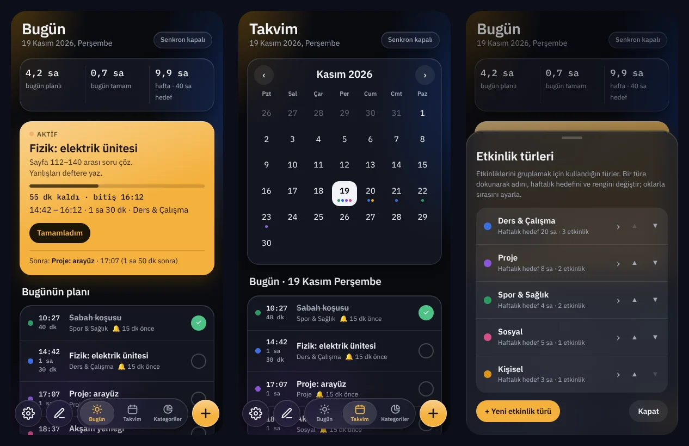

My Calendar App
My personal calendar app: I split my time into categories, give each one a weekly goal, compare what I planned with what I actually did, and get reminded when it is time. The same code runs as a web app installed on the iPhone home screen and as a Linux desktop app.
Screenshot

Project summary
I sort events into categories such as study, projects and sport & health, and give each category a weekly hour goal. The app shows how much I planned and how much I completed that week, and when I add a new event it tells me how much time is left to reach that category's goal.
What it does
- Today screen: the day's plan, a countdown to the next event and the next 7 days.
- Monthly calendar: each day marked with dots in its categories' colours.
- Categories: completed / planned / target hours and the time left to the goal.
- Reminders: in-app alerts and system notifications; export events with their alarms to the iPhone Calendar (.ics).
- Live sync between phone and computer: sign in with the same account and both devices show the same data; changes made offline sync once the connection is back.
- Works offline, with backup and restore for the data.
Technology
Development process
- It started as a single-file, phone-first web page: Today, Calendar and Categories tabs, an event form that slides up from the bottom, and weekly goals per category.
- It was turned into a Linux desktop app (Electron, AppImage). Closing the window keeps it running in the system tray, so reminders still arrive; optionally it starts on login.
- The fonts were bundled into the app and the page got a Content Security Policy: the app loads nothing from outside.
- For the iPhone it became a web app (PWA) that installs on the home screen: notch and home-bar spacing, an iOS icon, no zoom when tapping text fields, and offline support with a service worker.
- Because the data stays only on the device, backup and restore were added; the backup also moves data from the computer to the phone.
- The app was built together with Claude Code; the features, the decisions and the testing on the phone are mine.
- Cloud sync with email/password sign-in was added using Firebase (Firestore). Every event and category is stored as its own record; if two devices change different things both are kept, and if they change the same thing the latest change wins. Security rules let each user access only their own data.
- Next goal: notifications while the app is closed (Web Push).
Status
First usable version. On an iPhone, open the app in Safari and choose Share → “Add to Home Screen”. Without signing in, data stays only on that device; once you sign in it is stored in Google Firebase to sync between phone and computer, accessible only to your account. For now the iPhone does not let a closed web app send notifications on its own; for a guaranteed alarm, export the events to the iPhone Calendar.
See the source on GitHub →